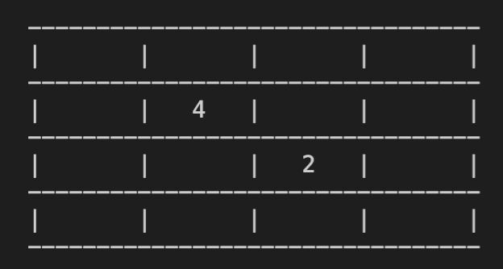

Stage 1 プログラムの機能を考える
1-1 盤面の機能を考える
まずは一般的な 2048 の仕様を再確認してみましょう。

なんだよ「一般的な」って
特殊な場合やる気満々じゃねぇかクソ
ノーマルの 2048 の盤面は 4 マス × 4 マスの正方形ですよね。
ただ我々こんな目に映えるグラフィックを扱うことはできない（この解説ではできなくて大丈夫）ので、とりあえずこんな形を目指しましょう。

うわちゃっちいな
つまりコマンドプロンプト・ターミナルで実行できるゲームを作ります。
なにそのコマンドとかなんとかって
おそらく「ハッカーのパソコン」と言ってイメージする画面ですよ。
あんなのムリに決まってんだろ
私も最初はそう思ってましたが、ちょいと慣れれば大したことはありませんよ。Python なんかより簡単です。
~~~~~~~~~~~~~~~
ゲームをコーディングするにあたって、盤上の数字を多重配列で表そうと思います。プログラミングの定石ですね。
まあ当然やな〜
2048 に限らずありとあらゆるボードゲームで使えるワザなので、ぜひ使いこなせるようにしましょう。普通盤面の大きさは 4 × 4 ですが、あとでサイズを自由に拡張できるように柔軟に設計しておくのがミソですね。

サイズを拡張...?
こういうゲームもできるようにするということです。
5 × 5 になったのか
そうですね。こんな具合にサイズを拡張できると、一つのコードで面白さも倍増します。
~~~~~~~~~~~~~~~
ということで盤面は
board = [row][col]
という形にします。ここで row は横長の行(row)、col は縦長の列(column)を表します。
row と column の順番に深い意味はありませんが、強いて言えば 3-4 なんかで便利になりますかね。

なんだよそのパッとしない理由、シャンとせいシャンと
~~~~~~~~~~~~~~~
盤面の上に乗る数字はそのまま board[row][col] の値にしてしまいましょう。
数字ないとこはどうすんのさ
なんも書いてねーよ
そうですね。数字のないところの処理をどうにかしないといけません。
数字ないところは 0 でいいんじゃないですか？「数字がない」ってのがわかればいいんですが、盤上で 0 なんて数字が出るわけないし、なんてったって他の数字と計算できる。
他の数字じゃダメなん？
できれば 0 がいいですね。例えば「空いてる [row, col] のマスに 4 を入れる」って
board[row][col] += 4
とかけますが、これに対して「4 が入ってる [row, col] のマスに 4 を動かして 8 にする」っていうのも
board[row][col] += 4
と同じコードで書けるじゃないですか。コードを書く量が減るって考えたら、別に突っかかる理由もないと思うんですけどね。